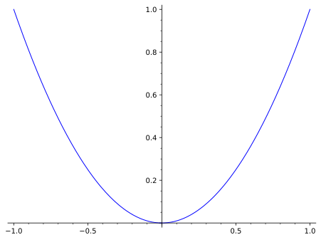

The statement of the example, since it will have a solution. What is the solution?
My Demo BookAn demo of PreTeXt features
January 9, 2026
Colophon Colophon
Website My Website
©2020–2022 Me
This work is licensed under the Creative Commons Attribution-ShareAlike 4.0 International License. To view a copy of this license, visit CreativeCommons.org
Dedication Dedication
For ...
Acknowledgements Acknowledgements
I would like to thank...
Preface Preface
About this book:
Preface Not just that..
I still have more to say!
Chapter 1 My First Chapter
This is the introduction to the chapter
Section 1.1 Introduction to First Chapter
Intro to section, because we will have subsections.
Another paragraph of the introduction.
Subsection 1.1.1 A subsection
Content of the subsection.
More content.
Subsection 1.1.2 Another Subsection
After the last subsection, you might have a conclusion.
Section 1.2 Examples
Here is an example:
Example 1.2.1.
Here is another example, but without a solution
Example 1.2.2.
This is an example of an example without a solution (or hint or answer) so the paragraph doesn’t need to be inside a statement tag.
Although the next things are not examples, they give examples of blocks that are not examples. First a theorem.
Theorem 1.2.3. Theorem Title.
This is the statement of the theorem.
Corollary 1.2.4.
A corollary that doesn’t need a proof.
Perhaps at the end of the section, you want to add a note to the reader about how what you have fits into the larger scope of mathematics.
Remark 1.2.5. Larger Context.
Comment to the reader here.
Of course, if you want more information, you might see Theorem 1.2.3.
Exercises 1.3 My Exercises
1.
Is this an exercise?
2.
Another, with a hint.
Chapter 2 (No title)
Try adding your own content here! This chapter doesn’t have sections.
Chapter 3 Features
Section 3.1 Environments and Blocks
Theorem 3.1.1.
Theorem statement.
Now a figure.

Chapter 4 PreTeXt features that require generation
Here we demonstrate various kinds of assets.
Section 4.1 LaTeX-Image Example
Section 4.2 PreFigure Example
The graphs of a function \(x(t)\) and its derivative \(x'(t)\) are shown in a coordinate plane. Note that the slope of each point of the graph of \(x(t)\) is equal to the vertical coordinate of the graph of \(x'(t)\) at the same \(t\)-value.
The graphs of a function \(x(t)\) and its derivative \(x'(t)\) are shown in a coordinate plane. Note that the slope of each point of the graph of \(x(t)\) is equal to the vertical coordinate of the graph of \(x'(t)\) at the same \(t\)-value.
Section 4.3 SagePlot Examples

Section 4.4 Asymptote Example
Section 4.5 WeBWorK Example
Checkpoint 4.5.1.
Section 4.6 MyOpenMath
Section 4.7 YouTube Example
Section 4.8 Interactive Example
Section 4.9 Codelens Example
Appendix A Selected Hints
1 My First Chapter
1.3 My Exercises
1.3.2.
Appendix B Selected Solutions
1 My First Chapter
1.3 My Exercises
1.3.1.
Appendix C List of Symbols
| Symbol | Description | Location |
|---|
Index Index
Testing Example
Colophon Colophon
This book was authored in PreTeXt.